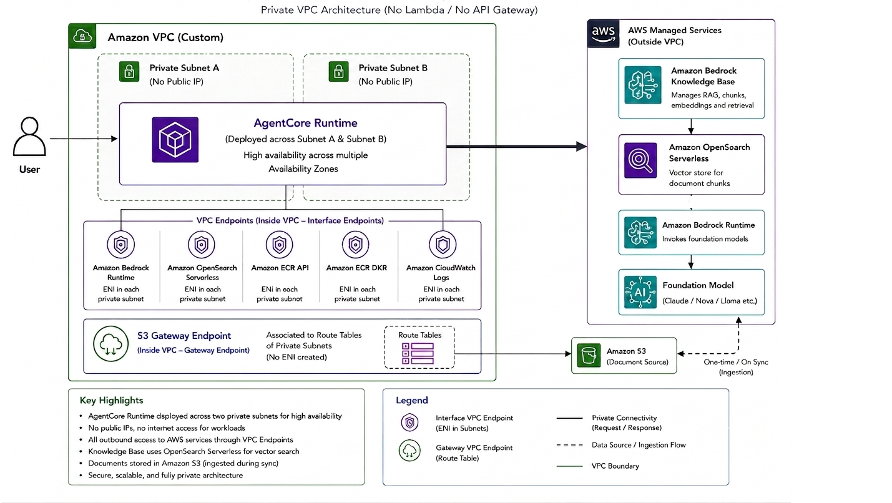
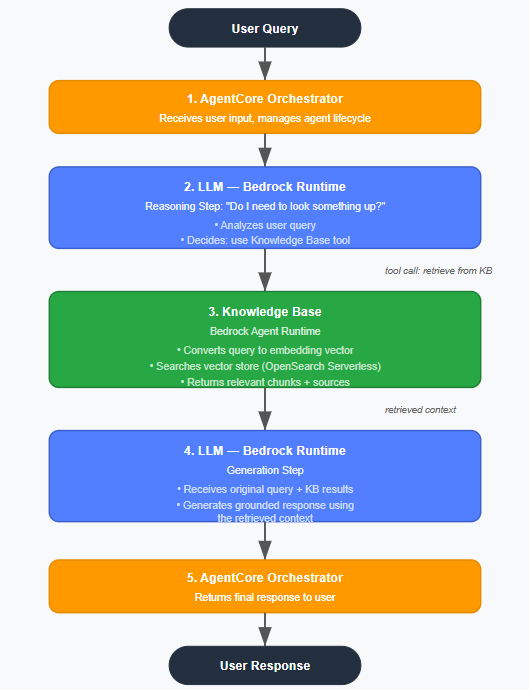

AWS AgentCore
Secure AI Ticket Routing System
A production-style AI application built using Amazon Bedrock AgentCore,
Amazon Bedrock Knowledge Base, and CrewAI. The application is deployed
inside a custom VPC with private subnets and uses VPC Endpoints for
secure communication with AWS services.
Architecture

Key Features
- Secure deployment inside a Custom VPC
- Two Private Subnets
- Knowledge Base Integration
- CrewAI Ticket Routing Agent
- Private connectivity using VPC Endpoints
- ECR and images used for creating agent
Flow Diagram

Challenges Solved
- 403 forbidden in ECR or something similar IAM need to be fixed.
- Resolved Docker image pull timeout by fixing the S3 Gateway Endpoint route table association.
- Configured OpenSearch Serverless VPC Endpoint for Knowledge Base access timeout error.